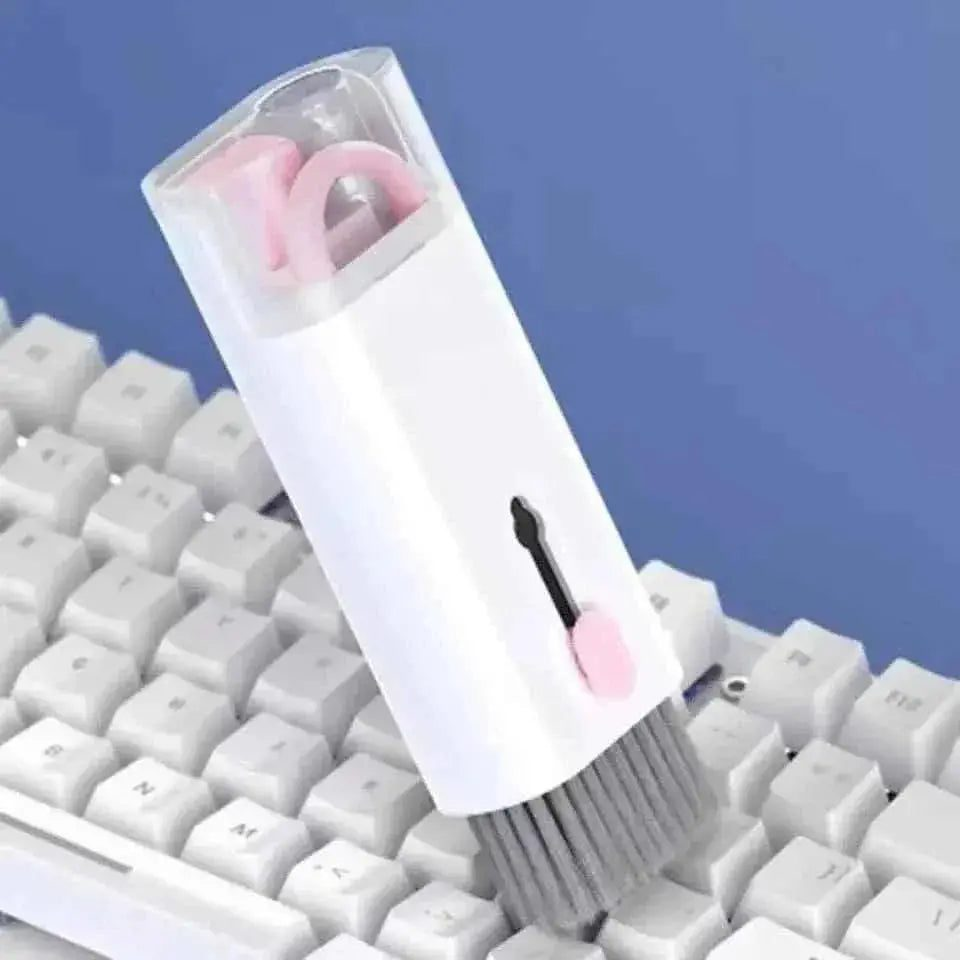
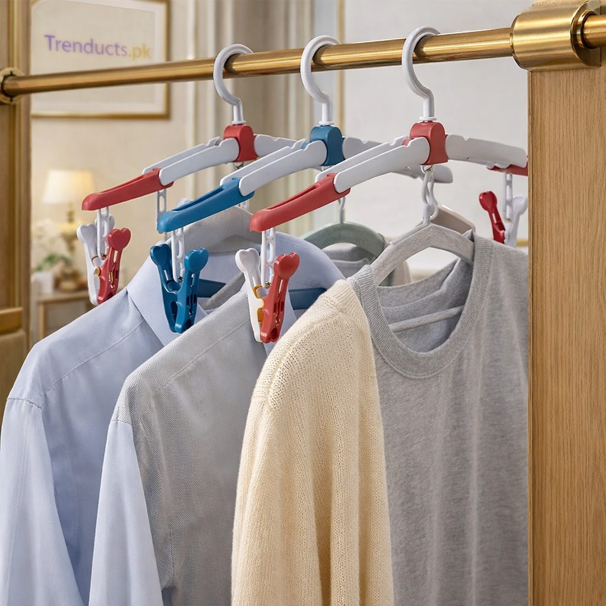

Pakistanis are famous for jugaad, the art of fixing a problem with whatever is at hand. A broken handle is tied with string, a wobbly table is propped with folded cardboard, and an old toothbrush cleans everything from grout to jewellery. Jugaad is clever, but sometimes a small, purpose-made gadget does the job better and for very little money. These are the kinds of utility tools that quietly make everyday life at home easier.
Continuous spray bottles
A regular spray bottle releases one quick squirt at a time. A continuous mist bottle produces a long, fine spray with one press, which makes many tasks quicker. Use it to water indoor plants without flooding them, mist clothes before ironing, spray cleaning solution evenly on glass and counters, or style hair. In the dry heat of Lahore summers, a light mist of water cools the face instantly. Because the mist is so fine, you use far less liquid than with a regular bottle.
Keyboard and screen cleaning kits
Laptops and keyboards collect dust, crumbs and hair, especially when used on the bed or at the dining table. A compact cleaning kit with a soft brush, keycap puller, small cloth and cleaning tools reaches between keys and around ports. Many kits also include earbud cleaners, since earbuds get grimy quickly. Clean your devices every few weeks; it keeps keys responsive and helps laptops run cooler by removing dust from vents.

Space-saving hangers
Cupboards in Pakistani homes are rarely big enough. Cascading or magic hangers let you hang five or six garments vertically from one hook, freeing rail space instantly. They work well for kurtas, trousers, scarves and children's clothes. Some fold to hang clothes vertically when space is narrow and horizontally when you want to see everything. For dupattas and scarves, hangers with multiple loops prevent tangling.
Small fans and portable cooling
Summers are long, and load-shedding still happens in many areas. Small rechargeable desk fans and handheld fans are useful for students studying late, for the kitchen while cooking, and for car journeys. Pick models with USB charging and a decent battery so they last through an outage.
Organising the junk drawer
Every home has a drawer full of batteries, rubber bands, keys, chargers, tape and screws. Small tray organisers or zip pouches sort these items so you can find a spare battery in seconds. Keep a basic toolkit with a screwdriver, pliers, measuring tape and super glue in a labelled box; it saves calling a mistri for small repairs.

Gadgets for the kitchen corner
Utility gadgets extend into the kitchen too: bag clips that keep chips and daal packets fresh, lid organisers, and sink-side caddies that hold sponges upright to dry. These small changes reduce clutter and keep the kitchen more hygienic.
Choosing gadgets wisely
Not every gadget is useful. Before buying, ask:
- Does it solve a problem I face every week?
- Will it replace something, or just add clutter?
- Is it easy to clean and store?
- Will it last, or break after a few uses?
The best gadgets are the ones you reach for without thinking, because they simply work.
Gifts that get used
Utility gadgets make thoughtful small gifts for students, newlyweds and office colleagues. A cleaning kit for someone who works on a laptop, or a set of space-saving hangers for a cousin moving into a hostel, is far more welcome than another showpiece.
Gadgets for older parents
Elderly parents benefit from simple tools: a spray bottle for plants they love, a pill organiser, or a small rechargeable fan near the bed. Choose items with large buttons and easy grips.
Car and travel helpers
Many small gadgets earn their place in the car too. A phone holder keeps navigation in view on long motorway drives, a spray bottle refreshes the dashboard and windows, and a compact cleaning brush clears crumbs from seats after a family trip to the north. Keep a small pouch in the glove box with a charging cable, tissues and a few such helpers.
Explore more ideas
You can browse mist bottles, cleaning kits, hangers and many more small solutions here, and see the full store at www.trenducts.pk, with delivery across Pakistan. A little modern jugaad goes a long way.